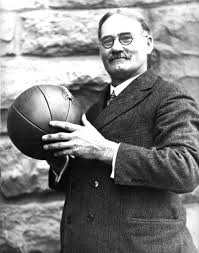

Баскетбол і його історія
Джеймс Нейсміт
Канадець Джеймс Нейсміт, ще навчаючись в Університеті Макґілла в Монреалі, став відомим спортсменом, добиваючись спортивних успіхів виступаючи за свої команди в різних ігрових видах спорту (регбі, канадський і європейський футбол, гімнастика). Коли ж він перейшов на викладацьку роботу почав виношувати плани створення менш контактної гри. Тому йому в пригоді стала пропозиція від «Міжнародної Юнацької Християнської Асоціації» у Спрінгфілді (Массачусетс) перебратися туди й викладати фізичне виховання у тамтешній школі. Посилання
Історія
Якось в 1891 році доктор Лютер Гулік, завідувач
кафедри
фізкультури, звернувся до Нейсміта за допомогою для
розв'язання проблеми завантаження учнівської молоді в часі
холодної зими. Студенти коледжу зі Спрингфілда взимку
просто мучилися від нудьги і туги на заняттях фізичного
виховання: нескінченні гімнастичні вправи, які в той час
були практично єдиним засобом залучення молоді до спорту,
вже мало кого надихали. Відтак Нейсміту необхідно було
вигадати цікаву забаву-гру, для того, щоб учні не бовталися
без справи, а знайшли вихід своєї невичерпній енергії.
Спершу, Нейсміт хотів проводити в залі футбольні матчі (саме
європейський варіант футболу) на час зими, але спортивний
зал школи був замалий для цього виду спорту, а американський
футбол та регбі були надто контактними видами і це
створювало би ще більшу напругу та конфліктність в межах
школи, все це й поставило Нейсміта перед фактом: доведеться
винаходити щось нове.
Нейсміт міркувавпросто: ігри з
м'ячем завжди були дуже популярні, проте для маленьких м'ячів
потрібно додаткове обладнання: рукавички, біти, ракетки та
інше спорядження, а ще — великий зал.
Тоді Джеймс вигадав п'ять основних принципів для майбутньої гри:
- Для гри потрібен м'яч,великий і легкий, з яким зручно грати («м'яч повинен добре лягати на руку»);
- Бігти з м'ячем в руках заборонено;
- Під час гри м'ячем може володіти будь-який гравець будь-якої команди;
- Обидві команди можуть гуртуватися в будь-якому місці майданчика, але фізичні контакти заборонені;
- Фізичні контакти заборонені.